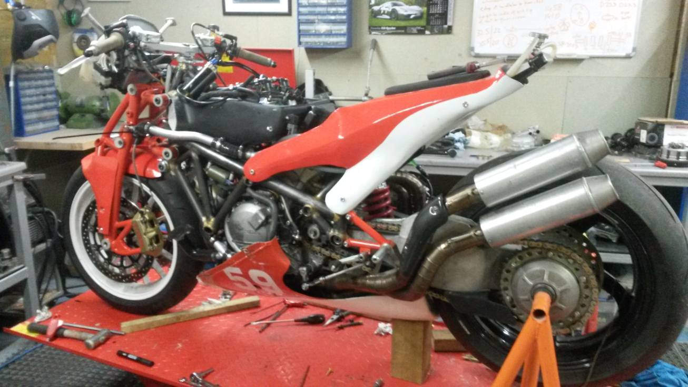

The history behind it
Back in 2012, I started to think that having raced many modern bikes I was lacking the satisfaction I was hoping for when I started racing. Reluctant to pursue a relentless story of refinement I started to think about what was missing; a relationship; the psychology of what was below me. What if I believed I could build something better; something purpose built for racing? To go against the grain and start enjoying racing again I purchased a £900 VFR800 that looked like it had been dredged up out of the sea. My plan was to always build a frame but what it would look like and what materials were mere minor details; it was going to happen.As the developments have progressed to this day; the only component I am still using from that bike is the fuel pump. The rest has been designed and made by myself using my own machines; prodomently manual with infrequent CNC work, along with extensive hand fabrication techniques such as welding, brazing, panel forming, vacuum infusion, clay moulding or for the few components I have not tackled such as brake calipers, wheels and crank casings; I have sourced elsewhere. The styling and designs are all my own work; right from the oil pump to the fairings.

The 1st build in Dec 2015
The business
A few years passed by where I persisted to run an engine tuning workshop and sub contract as an engineer to make up a busy 7 day working week. In that time I took the VFR in fairly standard trim; albeit with my own fairings, exhaust and mildly tuned engine to the southern 100 amongst many club races for 2 years along with a 2nd modern bike to keep my eye in whilst I developed the VFR. The modern bikes kept me sharp for a while until a foolish crash in the Isle of Man in 2014 prompted me to make a change. When lying underneath the broken Connor Cummins in the helicopter on the way Nobles hospital I decided that I was done with the boredom of modern racing; tired of the same 600’s and 1000’s being painted a different colour with excessively priced extras. The hay days of riding for teams and sponsers were long gone and at the time I had spent my hard earned money on my 1 year old Triumph 675R which got me to 15th in the southern 100 supersport 600 class before I got a chance to start pushing.At the same time I had learned that working on other people's bikes and turning out tuned engines for club racers wasn't going to teach me more than I already knew. Time for change. You are what you do and to a certain extent; what you look like too. If I was going to work all day, every day; I would look like I had! If I only worked on everyone else’s bike I wouldn’t learn how to build a chassis. On that thought; education has for quite some time been sold as a make or break life event; perhaps I am too sinnicle but the generations who have gone through University because they lost their way really stand out to me. There is also not enough flexibility to think outside the box. These days I believe we can all stand taller without a University degree with what is available to us using resources online and networking along with motivation.